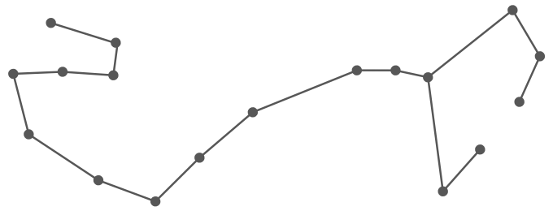

Star Constellation for Scorpio
Element: Water
Scorpio Symbol

The Scorpio personality is a profound chasm of infinite complexity (or at least how they project themselves). They are difficult people to get to know. They are psychological trap doors. They socialize from behind a double-sided mirror, always scanning, reading you while you can only see your own reflection. They prefer to be the people asking the questions. They remove your skin with their perceptive scalpel and take inventory of your pulsing viscera. They probe and push. They know the little things that make you tick. Your pressure points. The subtle ways to procure the answer they’re seeking. They are keenly aware of power, its flows, and their position within its matrix.
Despite their ability to be generally popular, there’s something very lonely about Scorpios. They have a ruthless view of the world. Eat or be eaten. Every human interaction is a meeting of opposing powerful forces. A clashing of wants and needs where somebody wins and somebody loses. Their knowledge of other people’s internal structures gives them an edge over the competition. They know how to play people against each other. They are forthcoming and evasive at the same time, depending on what is situationally beneficial. They are blunt, but not tactlessly so. They are intentional about the information they reveal. They’re not liars, they do not espouse falsehoods, but they are masters of opening windows on certain truths while concealing others behind heavy curtains.
Complimentary Signs to Scorpio: